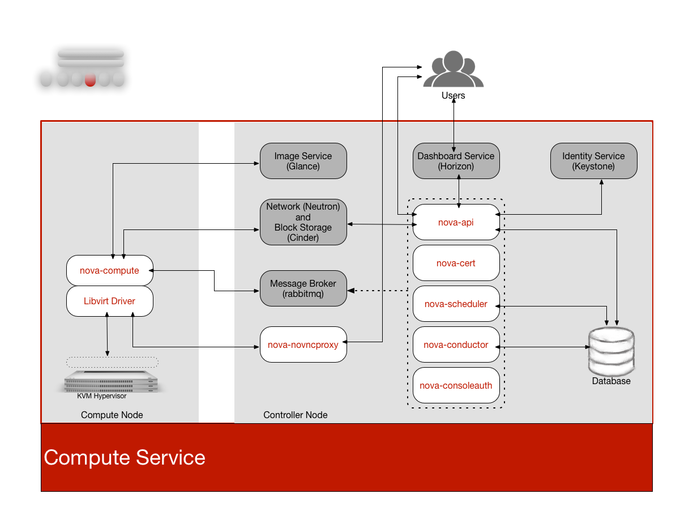

Compute service (nova)#
RPCO Compute serves as the core of the cloud by providing virtual machines on demand. Compute schedules virtual machines to run on a set of nodes by defining drivers that interact with underlying virtualization mechanisms, and by exposing the functionality to the other components.
Computes supports the libvirt driver libvirtd that uses KVM as the hypervisor. The hypervisor creates virtual machines.
Compute interacts with the Identity service to authenticate instance and database access, with the Image service to access images and launch instances, and with the dashboard service to provide user and administrative interface.
You can restrict access to images by project and by user, and specify project and user quotes, such as the number of instances that can be created by a single user.
When you deploy a RCPO cloud, you can break down the cloud according to different categories:
Host Aggregates and Availability Zones#
A single Compute deployment can be partitioned into logical groups. You can create multiple groups of hosts that share common resources such as storage and network, or groups that share a special property such as trusted computing hardware.
To administrators, the group is presented as a Host Aggregate with assigned compute nodes and associated metadata. The Host Aggregate metadata is commonly used to provide information for nova-scheduler actions, such as limiting specific flavors or images to a subset of hosts.
To users, the group is presented as an Availability Zone. The user cannot view the group metadata or see the list of hosts in the zone.
The benefits of aggregates, or zones, include:
- Load balancing and instance distribution.
- Physical isolation and redundancy between zones, implemented with a separate power supply or network equipment.
- Labeling for groups of servers that have common attributes.
- Separation of different classes of hardware.
Regions#
Each service cataloged in the Identity service is identified by the service region, which typically represents a geographical location, and the service endpoint. In a cloud with multiple compute nodes, regions enable discrete separation of services.
You can also use regions to share infrastructure between Compute installations while maintaining a high degree of failure tolerance.
| Component | Description |
|---|---|
| nova-api | Handles requests and provides access to the Compute services, such as booting an instance. |
| nova-cert | Provides the certificate manager. |
| nova-compute | Runs on each node to create and terminate virtual instances. The compute service interacts with the hypervisor to launch new instances, and ensures that the instance state is maintained in the Compute database. |
| nova-conductor | Provides database-access support for compute nodes to reduce security risks. |
| nova-consoleauth | Handles console authentication. |
| nova-novncproxy | Provides a VNC proxy for browsers to enable VNC consoles to access virtual machines. |
| nova-scheduler | Dispatches requests for new virtual machines to the correct node based on configured weights and filters. |
| nova | Command-line client to access the API. |
The following high level diagram shows the relationship between the Compute services and other RCPO components.
